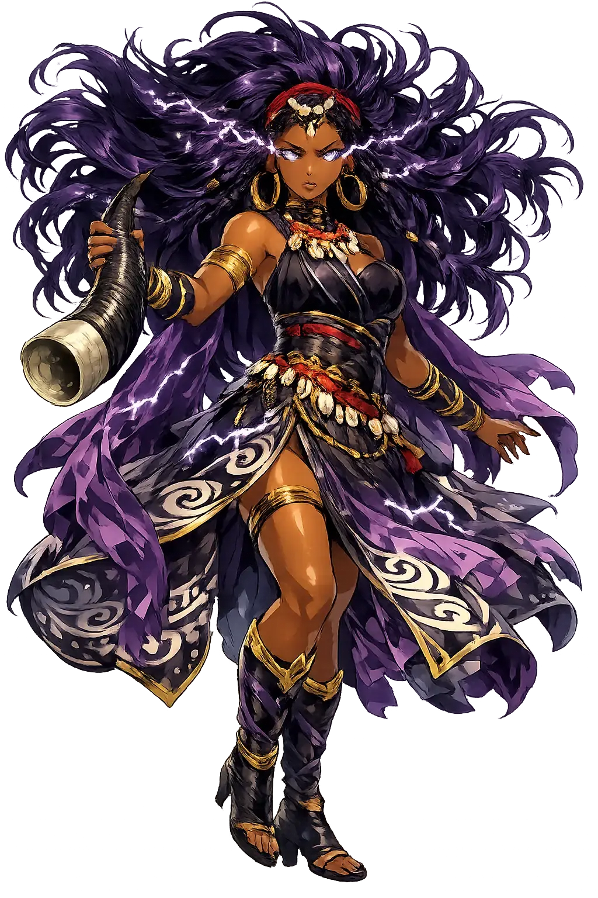
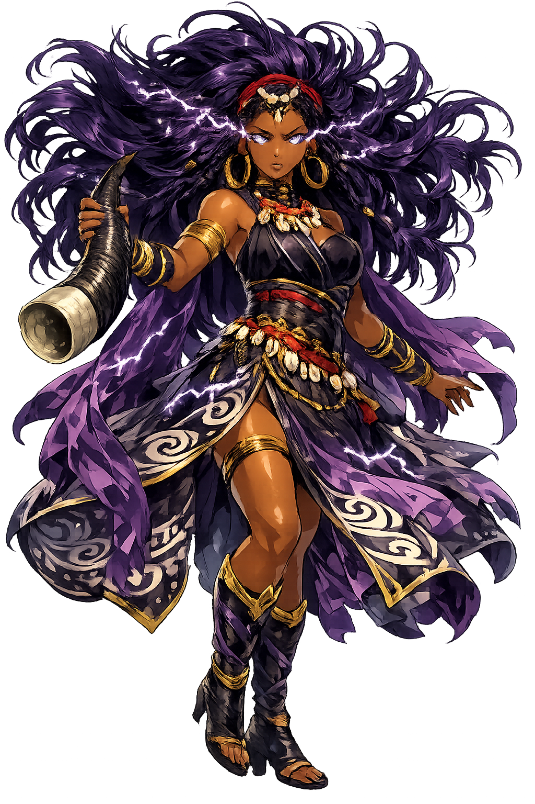

The Authentic Orthography
Wind, Storms, Change · Wind, Storms, Change · She who tore

Unicode restoration and ASCII comparison
Ọya
The name survives only in scholarly transliteration. Ọya is the standard Yoruba romanisation, documented in academic sources — “She who tore”. Its original diacritics and script distinctions preserve distinctions lost in plain ASCII.
No indigenous writing system is securely attested for individual yoruba names. The form shown is a modern scholarly transliteration.
oya
Reduced to plain oya, the name loses everything that made it specific: original diacritics and script distinctions. What remains is an ASCII string that machines can parse but that no longer speaks with its original voice.
Ọya
The Unicode restoration recovers what ASCII flattened. Ọya restores original diacritics and script distinctions, returning the name to its original written dignity. The domain encodes to Punycode, but the browser displays the truth.
Ọya.com → xn--ya-58s.com
The non-ASCII characters in Ọya are encoded while the ASCII remains visible. To the DNS, it is Punycode. To humanity, it is Ọya.
How Ọya is preserved in writing
No indigenous writing system is securely attested for individual yoruba names. The form shown is a modern scholarly transliteration.
Contribute scholarly provenance →How Ọya was spoken
Storms, Change, and the Cemetery Gate
Ọya is the orixá of wind, lightning, and radical change. She tears down what is finished so that something new can grow. In Yoruba cosmology she is the only female warrior to ride into battle alongside the thunder-god Ṣàngó, and she guards the threshold between the marketplace and the grave.
She arrives as a sudden gust that uproots trees and old assumptions.
Wife of Ṣàngó and fearless general, she carries a sword and the irukere fly-whisk.
She rules the cemetery gate and guides souls through transformation.
Crossroads and markets are her terrain, where chance and commerce meet change.
Stories of Ọya
Ọya's stories are told in Ifá divination, Candomblé praise-songs, and the oral traditions of the Yoruba and their diaspora. She is change embodied, and her myths turn on thresholds.
Ọya was once married to the thunder-god Ṣàngó, or in some accounts she was his favourite companion in war. She learned the secrets of fire and lightning from him, but she is not his subordinate. When Ṣàngó fled in disgrace, Ọya tore apart the cloth of the sky with her winds, and some say she threw herself into the river that bears her name.
Ọya is the goddess of the Niger River (Odò-Ọya). She raises the winds that churn its surface and the storms that announce the rainy season. Fishermen and traders invoke her when they must cross her waters, for she can overturn a boat as easily as she can speed it home.
Her very name means 'she tore'. In myth she tears the fabric of ordinary life to let the sacred through. To be possessed by Ọya in ritual is to be unmade and remade, to dance the destruction that clears the field for new growth. Those who fear her are usually those who cling too long to what is dying.
Ọya is the goddess we pray to when we are afraid of what must end. She does not promise gentle transformation. Her winds tear roofs from houses and uproot trees that have stood for decades. Yet without her, the air would stagnate and the soil would never clear for new seed.
Enter Extended Lore